| Input files: | wfn.inp, optional |
| Output files: | wfn.out |
| Reference: | Froese Fischer C 1987 Computer Phys. Commun. 43 355 |
| Gaigalas G and Froese Fischer C 1996 | |
| Computer Phys. Commun. 98 255 | |
This program has some built-in help features. By entering H (or h)
a brief summary of possible responses is provided.
| ATOM | 1-6 character label for the calculation |
| TERM | 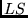 term value or "AV" or "av" (for average energy) |
| Z | Atomic number, real; non-integers are allowed. |
| S | screening parameter for the orbital |
| IND | 0 - use screened hydrogenic functions as initial estimates |
| 1 - leave radial function unchanged (already in memory) | |
| ACC | accelerating parameter (see HF-acc) |
| NO | maximum number of points in the range of the function (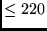) |
| STRONG | if true, orthogonalize after each orbital update (see HF-strong. |
| Enter t for true, f for false | |
| If t(true) radial functions are printed | |
| SCFTOL | initial value of the self-consistency criterion |
| NSCF | the maximum number of SCF cycles. |
| IC | number of orbitals to be updated using the least self-consistent |
| criteria. | |
| TRACE | If t (true), detailed information about the SCF energy adjust- |
| ment process is printed |
A feature of the HF program is that the occupation
numbers need not be integer. In order to study the 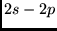
transition in Be, for example, orbitals could be computed for
the configuration 2s(1.5)2p(0.5) in which case average energy
calculations will be performed for
Also, various expectation values may be printed at the end of
a calculation. A sample input data line is given for each case
and, ideally, the input should be aligned with the sample.
However, the format for the
input is also provided. Here it is helpful to know the
following format rules for a line of input.
| nX | skip n positions on the line (i.e. enter n blanks) |
| An | the next n positions on the line will be interpreted as characters |
| In | the next n positions on the line will be interpreted as an integer |
It should also be remembered that HF is a program for
simple cases: if there are two or more open shells, an
calculation may not be possible using HF. Configurations of
the form 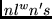 generally are allowed, 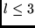; configurations
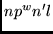, 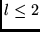 may
request information about the parent term for 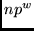; CSFs
of the form 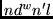 are not allowed except for 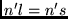;
open  -shells may have any occupation but, any other open
shell may only be single -electron. For more
complex situations NONH and MCHF should be used,
though these codes have not yet been extended to open
-shells may have any occupation but, any other open
shell may only be single -electron. For more
complex situations NONH and MCHF should be used,
though these codes have not yet been extended to open
 -shells.
-shells.
Program to sort the energy levels in a name.l
or name.j file and print energy levels in atomic units and
cm , relative to the lowest.
, relative to the lowest.
# ........Processing energy level data........
>levels
Enter name and type (.l or .j) of file
>A.j
Default Rydberg constant (y/n)
>y
ENERGY LEVELS
Z = 7 4 electrons
Rydberg Constant Used = 109733.01269
----------------------------------------------------------------
Configuration Term J Total Energy Energy Level
(a.u.) (cm-1)
----------------------------------------------------------------
1s(2).2s(2)_1S 0.0 -51.199917009 0.0000
1s(2).2s_2S.2p_3P 0.0 -50.894176385 67099.6795
1.0 -50.893898497 67160.6665
2.0 -50.893259802 67300.8384
1s(2).2s_2S.2p_1P 1.0 -50.595319927 132688.5185
----------------------------------------------------------------
Print transition data in a tr.lsj file (produced by the LSJTR program) in sorted (increasing) order, according to a number of different criteria. A maximum of 1000 lines may be processed. The tr.lsj files from a number of runs may be concatenated before processing.
# ........Processing line data........
>lines
Enter tolerance on line strength
>0
Name of .lsj file ?
>A.lsj
The file that will be searched is A.lsj
Number of transitions = 11
Select the line list order:
1: Energy (cm-1)
2: Wavelength (Angstroms) in Vacuum
3: Wavelength (Angstroms) in Air
4: Line Strength
5: gf Value
6: Transition Probability
Enter your selection:
>1
Line List for ( Z = 7.) with 4 electrons
--------------------------------------------------------------------------------
Transition Array
Multiplet Line Type E(cm-1) L(air) S gf Aki
--------------------------------------------------------------------------------
1s(2).2s_2S.2p 1s(2).2s_2S.2p
3P 3P 0.0- 1.0 M1 61.0 1639524.9 2.0000 0.0000 4.079E-06
1.0- 2.0 M1 140.2 713336.2 2.5000 0.0000 3.714E-05
1P 2.0- 1.0 M1 65387.7 1529.3 0.0000 0.0000 1.611E-02
1.0- 1.0 M1 65527.9 1526.1 0.0000 0.0000 9.730E-03
0.0- 1.0 M1 65588.8 1524.7 0.0000 0.0000 1.301E-02
--------------------------------------------------------------------------------
The new version of the genclf program has the same design as GENCL (see Froese Fischer and Liu [#!FL!#]) but has been extended to arbitrarily-filled f-shells. The latter required some change in notation. The subroutines that changed a lot are the LVAL, SYMB and COUPLD. The rest of the subroutines are either unchanged or the changes are not substantial. The LVAL subroutine is extended with a possibility to convert the symbols O and Q into its corresponding quantum number and in SYMB to convert the quantum numbers 11 and 12 into its corresponding symbol. In the COUPLD subroutine the data blocks containing the term characteristics are enlarged.
Input and output data of the new version are the same as before.
One needs only to take into account that the classification of
terms of the  subshell
is more complicated than for ,
subshell
is more complicated than for ,  , 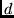 subshells.
For the classification of
, 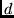 subshells.
For the classification of  -subshell terms the characteristics (2
-subshell terms the characteristics (2 +1)
(multiplicity),
+1)
(multiplicity),  (total orbital momentum), and 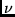 (seniority) are not
sufficient.
Here we use a notation
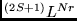 for the classification of
an
(total orbital momentum), and 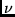 (seniority) are not
sufficient.
Here we use a notation
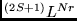 for the classification of
an  -subshell.
The 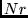 is single character, which corresponds the group
labels 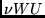. It is identical to Gaigalas
and Froese Fischer [#!GFa!#] and P5 [#!__4963__method5__4963__!#].
The value is found in Table 1 of P5 [#!__4964__method5__4964__!#]
where all terms for
-subshell.
The 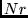 is single character, which corresponds the group
labels 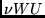. It is identical to Gaigalas
and Froese Fischer [#!GFa!#] and P5 [#!__4963__method5__4963__!#].
The value is found in Table 1 of P5 [#!__4964__method5__4964__!#]
where all terms for  -subshells are presented. In most
cases, appears to be a digit, but since it is a single
character, the single letter
-subshells are presented. In most
cases, appears to be a digit, but since it is a single
character, the single letter  is used instead of the number 10.
While in all the other cases the two-digit numbers n in 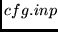 file
encode the following
is used instead of the number 10.
While in all the other cases the two-digit numbers n in 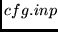 file
encode the following  = CHAR(n+ICHAR('0')) (see [#!FL!#]).
For example, the values of the principal quantum number
= CHAR(n+ICHAR('0')) (see [#!FL!#]).
For example, the values of the principal quantum number
 or multiplicity 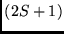 may exceed 9. On most systems the list of
integers,
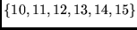 map into the list of characters,
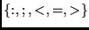. The CSF list if output to the file cfg.inp.
or multiplicity 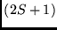 may exceed 9. On most systems the list of
integers,
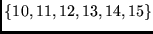 map into the list of characters,
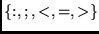. The CSF list if output to the file cfg.inp.
When  -shells are restricted to two electrons, the earlier
LSGEN program may be used [#!lsgen!#]. This program
has been extended to arbitrarily filled f-shells, and is known as
lsgenf but has not been documented. Like LSGEN, the CSF list that
is output is left in clist.out. For simple cases, gencl is
easier to use interactively. Unlike genclf where 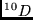 on
SUN systems must be entered as 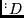, lsgenf allows the user to
specify 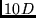, although the output file will adhere to the proper
convention.
-shells are restricted to two electrons, the earlier
LSGEN program may be used [#!lsgen!#]. This program
has been extended to arbitrarily filled f-shells, and is known as
lsgenf but has not been documented. Like LSGEN, the CSF list that
is output is left in clist.out. For simple cases, gencl is
easier to use interactively. Unlike genclf where 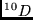 on
SUN systems must be entered as 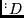, lsgenf allows the user to
specify 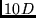, although the output file will adhere to the proper
convention.
The program maintains an order for the orbitals, determined from the order in which an orbital is first encountered. Thus, with a reference set of 4s(2)3d(1) and an active set of 3d,4s,4p the file cfg.inp will not have orbitals in a consistent ordering. The ordering of orbitals in the reference set, the active set, and the virtual set should always be the same in the sense that one orbital will always appear before or after another. Sometimes this is referred to as the after relation.
| d | Radial function is not copied (deleted) |
| (Blank) | No change in the label, radial function copied to wfn.out |
| AAA | Change label to AAA, then copy to wfn.out |
Depending on provided input files, tables require the following input:
.....
--------------------------------------------------------------------------------
Configuration Term J Total Energy Levels
--------------------------------------------------------------------------------
1. 2s(2).2p(3)4S3 4S 3/2 -54.554039298
2. 3/2 -54.554039298
3. 2s(2).2p(3)2D3 2D 5/2 -54.466443168 19224.37
4. 5/2 -54.466443168 19224.37
5. 3/2 -54.466403464 19233.09 8.71
6. 3/2 -54.466403464 19233.09
7. 2s(2).2p(3)2P1 2P 1/2 -54.422633792 28839.04
8. 1/2 -54.422633792 28839.04
9. 3/2 -54.422633692 28839.07 0.02
10. 3/2 -54.422633692 28839.07
--------------------------------------------------------------------------------
B.lsj not found ...
The following duplicate states will be erased:
2 4 6 8 10
Select more nonphysical, use a "+" at the end for a cut-off point. Example:
3 8 +, will additionally remove 3, 8 and higher.
The program will automatically erase all states that are duplicated, or nonphysical (i.e. the same states but with high energy).
If only .lsj files are present the user needs to enter the atomic number and the number of electrons, since this information is not present in the .lsj files.
1. Transition energies. 2. Lower-Upper. 3. Upper-Lower. 4. f value. 5. Line strength. 6. Wavelength(air).
| 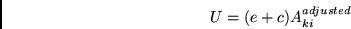 | (8) |
With respect to computing the uncertainty from LS discrepancy the allowed transitions and intercombination lines are treated differently:
| 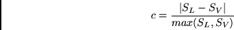 | (9) |
 |
(10) |
where i, j represent respectively all LHS and RHS states.
In addition, to the requirement to include only LS transitions for
the same configuration and the same J, the LS transitions are
included only if
 is
satisfied. This algorithm treats the mixing effects with equal
weights which is a simplifying assumption since not all other
LS transitions would involve terms with strong mixing with the
terms for which the uncertainty is computed.
is
satisfied. This algorithm treats the mixing effects with equal
weights which is a simplifying assumption since not all other
LS transitions would involve terms with strong mixing with the
terms for which the uncertainty is computed.
Z = 8 Energy levels and lifetimes for O I : O-like (8 electrons).
Rydberg constant is = 109733.5522
--------------------------------------------------------------------------------
Configuration Term J Energy Total Levels Splitting Lifetimes
(a.u.) cm^-1 cm^-1 s
--------------------------------------------------------------------------------
2s(2).2p(4)3P2 3P 2 -75.047520230
1 -75.046809230 156.04 156.04 1.1710e+04
0 -75.046502660 223.32 223.32 6.0864e+04
2s(2).2p(4)1D2 1D 2 -74.974059050 16122.31 1.1477e+02
2s(2).2p(4)1S0 1S 0 -74.893309390 33844.21 1.2732e+01
Z = 9 Energy levels and lifetimes for F II : O-like (8 electrons).
Rydberg constant is = 109734.1464
--------------------------------------------------------------------------------
Configuration Term J Energy Total Levels Splitting Lifetimes
(a.u.) cm^-1 cm^-1 s
--------------------------------------------------------------------------------
2s(2).2p(4)3P2 3P 2 -99.105054240
1 -99.103513980 338.04 338.04 1.1518e+03
0 -99.102849050 483.97 483.97 5.9653e+03
2s(2).2p(4)1D2 1D 2 -99.008796590 21125.50 1.9013e+01
2s(2).2p(4)1S0 1S 0 -98.900250320 44947.97 2.1206e+00
Z = 8
-------------------------------------------------
Configuration | Term | J | Level
| | | (cm-1)
---------------------|-------|-----|-------------
2s2.2p4 | 3P | 2 | 0.000
| | 1 | 158.265
| | 0 | 226.977
| | |
2s2.2p4 | 1D | 2 | 15867.862
| | |
2s2.2p4 | 1S | 0 | 33792.583
Z = 9
-------------------------------------------
Configuration | Term | J | Level
| | | (cm-1)
---------------|----------|----|-----------
2s2.2p4 | 3P | 2 | 0.0
| | 1 | 341.0
| | 0 | 489.9
| | |
2s2.2p4 | 1D | 2 | 20873.4
| | |
2s2.2p4 | 1S | 0 | 44918.1
2s(2).2p(4)3P2 & 3Pexpect the .lsj, .j and .lt files to contain:
2s(2).2p(4)3P2_3PFor the same state the NIST representation is
2s2.2p4and the term is represented in their energy tables as
2P. The next column shows the J value as it is represented in MCHF. Then the parity is shown as "e" for even and "o" for odd. Column 5 shows the representation of the state in the NIST format, column 6 shows the term, column 7 the J value. All 5,6,7 are from their tables. The user need to make sure their representation is consistent for all atoms, in some occasions, NIST omits the parent term. In some other cases, the J values are given on the same line, separated by comas, therefore, some editing may be required of the file A.E.NIST. Column 8 and 9 show the TEXrepresentation of state, term and J-value for given level. This is used to prepare TEXtables.
% FORMAT
MCHF::CONF T J P NIST::CONF T J TEX::CONF TEX::TERM
TERM
2s(2).2p(4)3P2 & 3P & 2 & e & 2s2.2p4 & 3P & 2 & $2p^4$ & \Term 3 P {2}/
2s(2).2p(4)3P2 & 3P & 1 & e & 2s2.2p4 & 3P & 1 & $2p^4$ & \Term 3 P {1}/
2s(2).2p(4)3P2 & 3P & 0 & e & 2s2.2p4 & 3P & 0 & $2p^4$ & \Term 3 P {0}/
2s(2).2p(4)1D2 & 1D & 2 & e & 2s2.2p4 & 1D & 2 & $2p^4$ & \Term 1 D {2}/
2s(2).2p(4)1S0 & 1S & 0 & e & 2s2.2p4 & 1S & 0 & $2p^4$ & \Term 1 S {0}/
.......
.......
The second part of LEVELS.ref gives the representation of the LS transitions. Note that the first column shows the groups which are used to compute the LS uncertainties for intercombination lines. The user may control this process by appropriate grouping of the configurations, in this case any intercombination line which is in group UA will use the combined gf normalized uncertainty for all LS transitions which include states from that group (UA). Column 3 shows the parity, and columns 4 and 5 show the TEXrepresentation of the string.
...........
...........
LSTRENDS::CONF TERM P TEX::CONF TERM::CONF
UA 2s(2).2p(4)3P2 & 3P & e & $2p^4$ & \Term 3 P {}/
UA 2s(2).2p(4)1D2 & 1D & e & $2p^4$ & \Term 1 D {}/
UA 2s(2).2p(4)1S0 & 1S & e & $2p^4$ & \Term 1 S {}/
UB 2s.2p(5) & 3P & o & $2s2p^5$ & \Termo 3 P {}/
UB 2s.2p(5) & 1P & o & $2s2p^5$ & \Termo 1 P {}/
UC 2p(6) & 1S0& e & $2p^6$ & \Term 1 S {}/
UD 2s(2).2p(3)4S3_4S.3s & 5S & o & $2p^3(^4\!S)3s$ & \Termo 5 S {}/
UD 2s(2).2p(3)4S3_4S.3s & 3S & o & $2p^3(^4\!S)3s$ & \Termo 3 S {}/
UD 2s(2).2p(3)2D3_2D.3s & 3D & o & $2p^3(^2\!D)3s$ & \Termo 3 D {}/
UD 2s(2).2p(3)2D3_2D.3s & 1D & o & $2p^3(^2\!D)3s$ & \Termo 1 D {}/
...........
...........
Transition between files:
I
F
Z = 10 n = 4
4 -126.43021002 2s(2).2p(4)1D2_1D
4 -124.91782770 2s(2).2p(3)2D3_2D.3s_1D
331920.45 CM-1 301.28 ANGS(VAC) 301.28 ANGS(AIR)
E1 length: S = 5.57939D-01 GF = 5.62529D-01 AKI = 8.26771D+09
velocity: S = 6.29443D-01 GF = 6.34621D-01 AKI = 9.32728D+09
Transition between files:
I
F
Z = 10 n = 5
4 -126.44256936 2s(2).2p(4)1D2_1D
4 -124.93014302 2s(2).2p(3)2D3_2D.3s_1D
331930.11 CM-1 301.27 ANGS(VAC) 301.27 ANGS(AIR)
E1 length: S = 6.16498D-01 GF = 6.21587D-01 AKI = 9.13625D+09
velocity: S = 6.37137D-01 GF = 6.42398D-01 AKI = 9.44213D+09
Transitions of Z = 10 Ne III : O-like (8 electrons). 1029
4 -125.07174692 2s(2).2p(3)4S3_4S.3p_3P
4 -125.06526463 2s(2).2p(3)2D3_2D.3s_1D
1422.66 CM-1 70290.93 ANGS(VAC) 70283.66 ANGS(AIR)
E1 S = 1.53317e-04 GF = 6.62544e-07 AKI = 1.78891e-01
7.25277e-05 3.13422e-07 8.46258e-02
2 -125.07179831 2s(2).2p(3)4S3_4S.3p_3P
4 -125.06526463 2s(2).2p(3)2D3_2D.3s_1D
1433.94 CM-1 69738.04 ANGS(VAC) 69730.83 ANGS(AIR)
E1 S = 1.37332e-04 GF = 5.98173e-07 AKI = 1.64082e-01
8.58197e-05 3.73802e-07 1.02536e-01
Transitions of Z = 10 Ne III : O-like (8 electrons). 1012
6 -124.88276742 2s(2).2p(3)4S3_4S.3d_3D
4 -124.87914668 2s(2).2p(3)2D3_2D.3p_3P
794.64 CM-1 125843.38 ANGS(VAC) 125830.37 ANGS(AIR)
E1 S = 1.11727e+00 GF = 2.69681e-03 AKI = 2.27176e+02
1.40563e+02 3.39284e-01 2.85809e+04
4 -124.88282539 2s(2).2p(3)4S3_4S.3d_3D
4 -124.87914668 2s(2).2p(3)2D3_2D.3p_3P
807.36 CM-1 123860.37 ANGS(VAC) 123847.57 ANGS(AIR)
E1 S = 2.00592e-01 GF = 4.91933e-04 AKI = 4.27773e+01
2.41638e+01 5.92593e-02 5.15305e+03
The program tabulates a wide range of data in text format. In addition, some data is saved in tex format:
The output file _A.log contains the following tables:
The file _A.lsj.log and sorts all LSJ transitions for all atoms.
For each atom, the program tabulates the LS trends in a file _A.LS_Z_NN, where NN is the atomic number. The format of the file is:
-------------------------------------------------------------------------------- Z n EL EU SL(v) SL(V) gf(L) gf(V) Error -------------------------------------------------------------------------------- 2s(2).2p(4)3P2_3P 2s(2).2p(3)4S3_4S.3s_3S 8 4 -74.98462945 -74.61714316 1.326e+00 2.490e+00 3.249e-01 6.101e-01 0.467 8 5 -74.99510073 -74.64418231 1.767e+00 2.231e+00 4.135e-01 5.219e-01 0.208 8 6 -74.99727166 -74.64656634 1.834e+00 2.026e+00 4.289e-01 4.737e-01 0.095 8 7 -74.99794341 -74.64671241 1.842e+00 1.969e+00 4.313e-01 4.610e-01 0.064 2s(2).2p(4)3P2_3P 2s(2).2p(3)4S3_4S.3d_3D 8 4 -74.98462945 -74.54669516 4.380e-01 5.632e-01 1.279e-01 1.644e-01 0.222 8 5 -74.99510073 -74.55436390 5.785e-01 6.086e-01 1.700e-01 1.788e-01 0.049 8 6 -74.99727166 -74.55501892 5.885e-01 6.355e-01 1.735e-01 1.874e-01 0.074 8 7 -74.99794341 -74.55505464 5.956e-01 6.338e-01 1.759e-01 1.871e-01 0.060
(georgio@gitm)131% sed -V GNU sed version 3.02This script takes a single .c, or multiple *.c files as an argument and formats them saving the original files in *.c.old. Usage: "./sh_cat *.c" will transform all .c files in the directory.